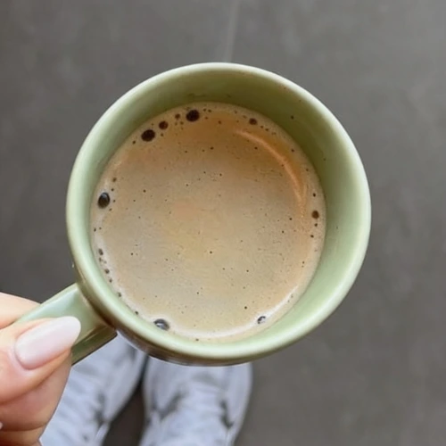

Um espaço para falar sobre o que você sente com liberdade e respeito.
Instituto Gesser · Joinville/SC
Psicóloga Clínica especializada
Psicoterapia para adolescentes e adultos, com acolhimento, presença e um processo construído com cuidado.
02 / Sobre
Cuidado que transforma.
Bruna Gesser é psicóloga clínica em Joinville e realiza psicoterapia com adolescentes e adultos. O atendimento considera a história, o momento e as necessidades de cada pessoa, em um espaço de escuta e cuidado.
Acompanhamento acontece de forma singular, respeitando seu tempo e sua história.
Compreensão, reflexão e construção de novas possibilidades.
Eu aprendi a nadar tão bem, que ninguém mais vem ver se eu estou me afogando ou não.
03 / Atendimentos
Momentos da sua trajetória.
Um espaço de cuidado psicológico para adolescentes e adultos, com atenção às experiências, emoções, relações e mudanças que atravessam cada fase da vida.
Psicoterapia para adolescentes
Conhecer atendimentoPsicoterapia para adultos
Conhecer atendimentoAcompanhamento psicológico
Conhecer atendimentoSaúde emocional
Conhecer atendimentoAutoconhecimento
Conhecer atendimento
04 / Galeria
Um olhar atento para cada história.
Conheça um pouco mais sobre Bruna Gesser e sua atuação em psicologia clínica.
Bruna Gesser
Psicóloga Clínica · Joinville
Escuta e presença
Psicoterapia · Adolescentes e AdultosCuidado individual
Psicologia Clínica · AcolhimentoUm processo singular
Escuta · Reflexão · AutoconhecimentoPsicoterapia em Joinville
Atendimento psicológico · Joinville/SC
FAQ

Algumas dúvidas antes de começar.
Respostas para dúvidas comuns sobre psicoterapia, atendimento psicológico para adolescentes e adultos e o processo de agendamento com Bruna Gesser em Joinville.
Ainda tem uma dúvida?A psicoterapia é um espaço de escuta e reflexão. Ao longo dos encontros, você pode falar sobre emoções, relações, escolhas, dificuldades e situações do cotidiano, construindo compreensão sobre o que vive e novas formas de lidar com essas experiências.
Contato
Joinville · SC
Agendar uma sessão?
Entre em contato diretamente com Bruna Gesser para consultar horários e informações sobre psicoterapia para adolescentes e adultos em Joinville.
Vamos conversar. Agendar pelo WhatsApp
Psicologia clínica
Atendimento para adolescentes e adultos
Atendimento em Joinville
Santa Catarina
Contato direto
Agendamento e informações pelo WhatsApp